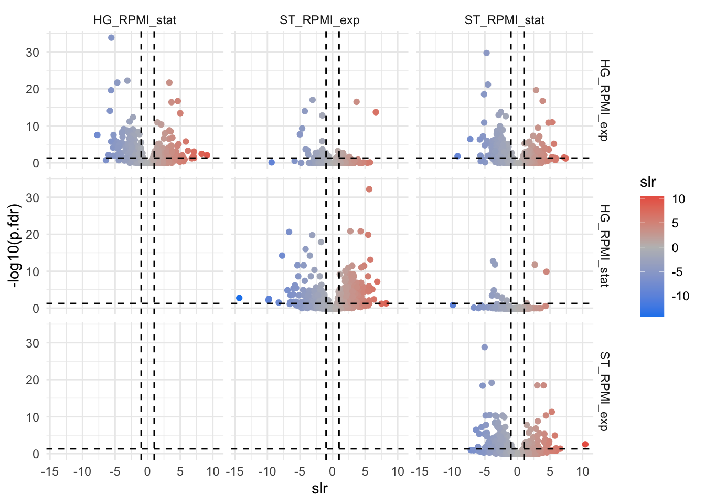

ROPECA performs better in terms of true and false-positive test results. Better than using a t-Test, MSstats or MapDIA appraoch. The ROPECA test statistics or ROTS can be applied to RNAseq, array or proteomics data.
Abstract from the ROPECA paper: “We describe a new reproducibility-optimization method ROPECA for statistical analysis of proteomics data with a specific focus on the emerging data-independent acquisition (DIA) mass spectrometry technology. ROPECA optimizes the reproducibility of statistical testing on peptide-level and aggregates the peptide-level changes to determine differential protein-level expression. Using a ‘gold standard’ spike-in data and a hybrid proteome benchmark data we show the competitive performance of ROPECA over conventional protein-based analysis as well as state-of-the-art peptide-based tools especially in DIA data with consistent peptide measurements. Furthermore, we also demonstrate the improved accuracy of our method in clinical studies using proteomics data from a longitudinal human twin study.”"
Suomi, T., & Elo, L. L. (2017). Enhanced differential expression statistics for data-independent acquisition proteomics. Scientific Reports, 7(1), 5869. http://doi.org/10.1038/s41598-017-05949-y
ROPECA uses the ROTS … reproducibility-optimized test statistic.
Part of the ROTS paper abstract: “… A major challenge in the analysis is the choice of an appropriate test statistic, as different statistics have been shown to perform well in different datasets. To this end, the reproducibility-optimized test statistic (ROTS) adjusts a modified t-statistic according to the inherent properties of the data and provides a ranking of the features based on their statistical evidence for differential expression between two groups. …”
Suomi, T., Seyednasrollah, F., Jaakkola, M. K., Faux, T., & Elo, L. L. (2017). ROTS: An R package for reproducibility-optimized statistical testing. PLoS Computational Biology, 13(5), e1005562. http://doi.org/10.1371/journal.pcbi.1005562
ATTENTION !!!! very computation intensive
## ###### ########### ######## ########## ##### #
## # # # # # # # # # #
## # # # # # # # # # #
## # # # # # # # # # #
########################################## ROPECA ##########################################
## # # # # # # # # #
## # # # # # # # # #
## # # # # # # # # #
## # # ########### # ########## ##### # #
########################################## ROPECA parallel using BiocParallel ##########################################
# load the library
library(PECA) #Bioconductor
library(BiocParallel) #Bioconductor
library(tidyverse) #CRAN
#load your peptide data
peptide_data <- read_delim(file = "peptide_data.txt",delim = "\t",col_names = T)
peptide_data_ROPECA_in <- peptide_data %>%
select(PG.ProteinGroups,PEP.StrippedSequence,peptide_Intensity,R.FileName.short) %>%
spread(key = R.FileName.short,value=peptide_Intensity)
#write_delim(x = peptide_data,path = "peptide_data.txt",delim = "\t",col_names = T)
file_conditions_ROPECA_in <- peptide_data %>% distinct(R.FileName.short,R.Condition,strain,media_growth_phase)
# ROPECA
#setup comparison pairs by using combn() function
pairs <- combn(unique(file_conditions_ROPECA_in$R.Condition), 2,simplify = F)
#use bplapply function for parallel processing // MulticoreParam can be used to select the number of cores
ROPECAresult <- BiocParallel::bplapply(X = pairs, FUN = function(x){
#progress indication
message("###################################################################")
message("")
message(paste("#### START: ",x[1]," vs ",x[2],sep=""))
message("")
message("###################################################################")
#lookup group1
group1 <- as.character(file_conditions_ROPECA_in$R.FileName.short[file_conditions_ROPECA_in$R.Condition %in% x[1]])
#lookup group2
group2 <- as.character(file_conditions_ROPECA_in$R.FileName.short[file_conditions_ROPECA_in$R.Condition %in% x[2]])
#calculate ROPECA
#check if there are always 2 sample at least per condition
peca.out <- c()
peca.out <- PECA::PECA_df(df = peptide_data_ROPECA_in,#input data.frame
id = "PG.ProteinGroups",#set the protein ID column
samplenames1 = group1,#string input for the group1
samplenames2 = group2,#string input for the group2
test="rots",#use the ROTS test
type="median",#do the median test
normalize=FALSE,#no normalization since normalization should be done upfront (e.g. median norm.)
paired=FALSE,
progress = F)
peca.out$PG.ProteinGroups <- rownames(peca.out) #add the rownames as column
peca.out$group1 <- x[1]#add group1 from the pairwise comparison
peca.out$group2 <- x[2]#add group2 from the pairwise comparison
return(peca.out)# output for the for loop
#progress indication
message("###################################################################")
message("")
message(paste("#### Finished: ",x[1]," vs ",x[2],sep=""))
message("")
message("###################################################################")
},
BPPARAM=MulticoreParam(4,#set number of cores to use for calculation
progressbar=TRUE))
#merge list to one big tibble
ROPECAresult_final <- as_tibble(do.call(rbind,ROPECAresult))
#write output
write_delim(x = ROPECAresult_final,path = "ROPECA_test_results_pairwise_comparisons__rho_project.txt",delim = "\t",col_names = T)A modified t-statistic is calculated using the linear modeling approach in the Bioconductor limma package.
Empirical Bayes Statistics for Differential Expression: The empirical Bayes moderated t-statistics test each individual contrast equal to zero. For each gene/protein, the moderated F-statistic tests whether all the contrasts are zero. The F-statistic is an overall test computed from the set of t-statistics for that probe/peptide. This is exactly analogous the relationship between t-tests and F-statistics in conventional anova, except that the residual mean squares have been moderated between genes/proteins.
Since ROPECA is very time consuming and calculation intensive I did the ROPECA test with the code listed above. Now we need to load the ROPECA results. You may find the results in the Materials section
#load ROPECA results
ROPECA_stats <- read_delim(file = "ROPECA_test_results_pairwise_comparisons__rho_project.txt",delim = "\t",col_names = T)## Parsed with column specification:
## cols(
## slr = col_double(),
## t = col_double(),
## score = col_double(),
## n = col_double(),
## p = col_double(),
## p.fdr = col_double(),
## PG.ProteinGroups = col_character(),
## group1 = col_character(),
## group2 = col_character()
## )ROPECA_stats## # A tibble: 43,120 x 9
## slr t score n p p.fdr PG.ProteinGroups group1 group2
## <dbl> <dbl> <dbl> <dbl> <dbl> <dbl> <chr> <chr> <chr>
## 1 0.877 0.802 0.454 12 3.71e- 1 7.80e-1 SAOUHSC_00001 HG_RPM… HG_RP…
## 2 -0.161 -0.359 0.770 15 9.90e- 1 1.00e+0 SAOUHSC_00002 HG_RPM… HG_RP…
## 3 1.12 1.04 0.384 4 3.08e- 1 6.93e-1 SAOUHSC_00003 HG_RPM… HG_RP…
## 4 1.41 1.45 0.269 6 1.05e- 1 3.36e-1 SAOUHSC_00004 HG_RPM… HG_RP…
## 5 0.861 1.11 0.371 20 1.17e- 1 3.66e-1 SAOUHSC_00005 HG_RPM… HG_RP…
## 6 0.482 0.941 0.458 31 3.19e- 1 7.11e-1 SAOUHSC_00006 HG_RPM… HG_RP…
## 7 -0.836 -1.40 0.267 2 2.15e- 1 5.57e-1 SAOUHSC_00007 HG_RPM… HG_RP…
## 8 0.159 0.193 0.902 2 9.49e- 1 1.00e+0 SAOUHSC_00008 HG_RPM… HG_RP…
## 9 -1.27 -2.09 0.0879 33 3.29e-10 1.75e-8 SAOUHSC_00009 HG_RPM… HG_RP…
## 10 -2.26 -5.14 0.00549 1 5.49e- 3 3.57e-2 SAOUHSC_00013 HG_RPM… HG_RP…
## # … with 43,110 more rowsfilter data to RPMI comparisons only
ROPECA_stats_only_RPMI <- ROPECA_stats %>%
filter(grepl(pattern = "RPMI",x = group1) & grepl(pattern = "RPMI",x = group2)) %>%
unite(group1,group2,col = "comparison",sep = "__vs__",remove = F) #add comparison column for grouping
#add protein meta data statistics
annotation_data <- read_tsv(file = "materials/Saureus__aureowiki_GeneSpecificInformation_NCTC8325.tsv")## Parsed with column specification:
## cols(
## .default = col_character(),
## synonym = col_logical(),
## `Gene ID` = col_double(),
## `TIGRFAM HMM score` = col_double(),
## effector = col_logical(),
## `transmembrane helices` = col_double(),
## `protein GI` = col_double()
## )## See spec(...) for full column specifications.ROPECA_stats_only_RPMI_annotated <- left_join(ROPECA_stats_only_RPMI,annotation_data,by=c("PG.ProteinGroups"="locus tag")) %>% distinct()
volcano.plot<- ggplot(ROPECA_stats_only_RPMI_annotated,aes(x=slr,y=-log10(p.fdr),color=slr))+
geom_point()+
theme_minimal()+
facet_grid(group1~group2)+ # show all comparisons in a grid
geom_hline(yintercept = -log10(0.05),linetype="dashed")+
geom_vline(xintercept = log2(2),linetype="dashed")+
geom_vline(xintercept = log2(1/2),linetype="dashed")+
scale_colour_gradient2(low = "dodgerblue2", mid = "grey",high = "firebrick2", midpoint = 0)
volcano.plot
Finnaly lets to an interactive Volcanoplot with highlight() function. This function sets a variety of options for brushing (i.e., highlighting) multiple plots.
ROPECA_stats_only_RPMI <- ROPECA_stats %>%
filter(grepl(pattern = "RPMI",x = group1) & grepl(pattern = "RPMI",x = group2)) %>%
unite(group1,group2,col = "comparison",sep = "__vs__",remove = F) #add comparison column for grouping
ROPECA_stats_only_RPMI_shared <- crosstalk::SharedData$new(ROPECA_stats_only_RPMI, ~PG.ProteinGroups) #shared data are the protein groups
ggvolcano_all <- ggplot(ROPECA_stats_only_RPMI_shared,aes(x=slr,y=-log10(p.fdr),color=slr))+
geom_point(size=1.5)+
theme_minimal()+
geom_hline(yintercept = -log10(0.05),linetype="dashed")+
geom_vline(xintercept = log2(2),linetype="dashed")+
geom_vline(xintercept = log2(1/2),linetype="dashed")+
scale_colour_gradient2(low = "dodgerblue2", mid = "grey",high = "firebrick2", midpoint = 0)+
facet_wrap(~comparison)
highlight(ggplotly(ggvolcano_all), dynamic = TRUE, selectize = TRUE)